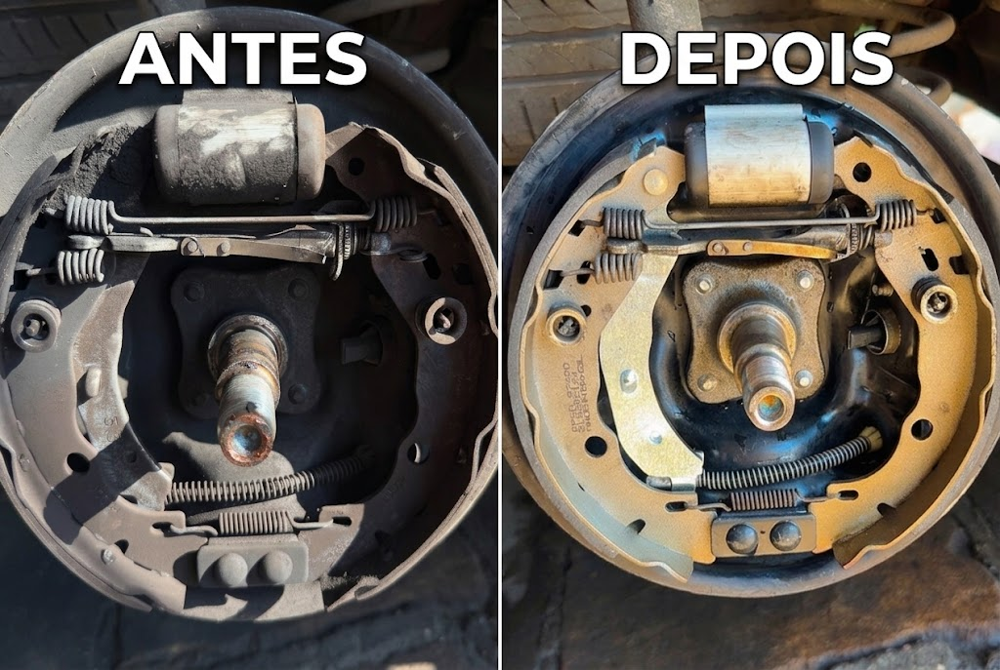

Mecânica Geral
Diagnóstico e manutenção preventiva para todas as marcas.
FG Motors · Rua Dr. Mário Totta, 3129 · Porto Alegre
Mecânica, diagnóstico e manutenção para você dirigir com segurança.
Diagnóstico e manutenção preventiva para todas as marcas.
Revisão e reparos técnicos para preservar desempenho e durabilidade.
Ajustes e trocas para estabilidade, conforto e segurança ao dirigir.
Inspeção completa do sistema de freios para máxima confiabilidade.
Remoção completa e segurança no manuseio de sistemas de gás natural veicular.
Diagnóstico avançado com equipamentos modernos para identificar problemas e garantir a segurança do veículo.
Revisão e manutenção de sistemas de ar condicionado para garantir conforto e eficiência.
Revisão e manutenção de sistemas de injeção eletrônica para garantir desempenho e eficiência.
Por dentro da oficina
Conheça o espaço, a estrutura e o cuidado que colocamos em cada serviço.


Estrutura profissional, equipe qualificada e compromisso com um serviço transparente do início ao fim.
Rua Dr. Mário Totta, 3129
Porto Alegre - RS
Solicite seu orçamento sem compromisso pelo WhatsApp.